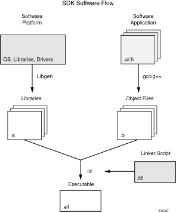

The software workflow in SDK is described in the following figure.
|
 |
The first step in developing a software application is to create a Board Support Packages (SDK) that will be used by the application. Then, you can create an application project.
To build an executable for this application, SDK automatically performs the following actions. Configuration options can also be provided for these steps.
The following sections provide an overview of concepts involved in building applications.
Compilation of source files into object files is controlled using Makefiles. With SDK, there are two possible options for Makefiles:
Software developers typically build different versions of executables, with different settings used to build those executables. For example, an application that is built for debugging uses a certain set of options (such as compiler flags and macro definitions), while the same application is built with a different set of options for eventual release to customers. SDK makes it easier to maintain these different profiles using the concept of build configurations.
Each build configuration could customize:
By default, SDK provides three build configurations, as shown here:
The final step in creating an executable from object files and libraries is linking. This is performed by a linker that accepts linker command language files called linker scripts. The primary purpose of a linker script is to describe the memory layout of the target machine, and specify where each section of the program should be placed in memory.
SDK provides a linker script generator to simplify the task of creating a linker script. The linker script generator GUI examines the target hardware platform and determines the available memory sections. The only action required by you is to assign the different code and data sections in the ELF file to different memory regions.